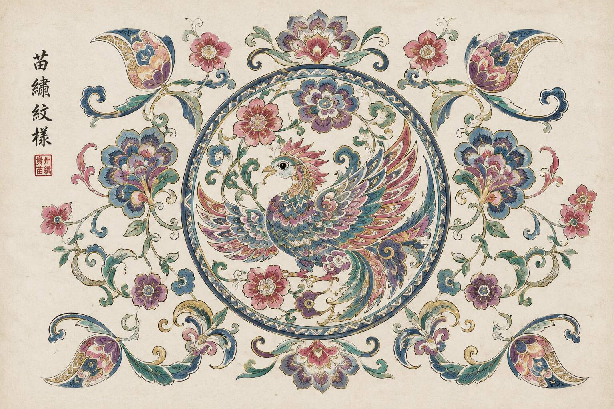
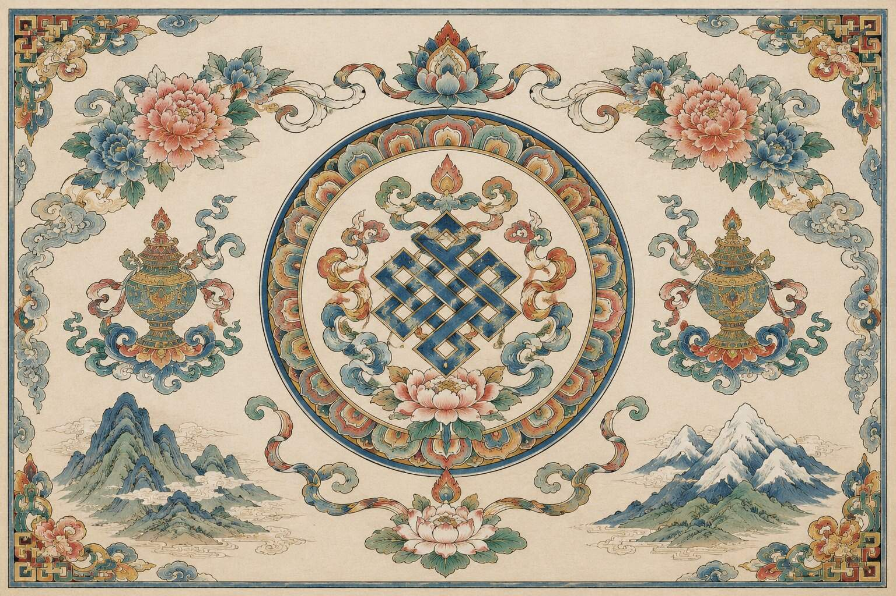
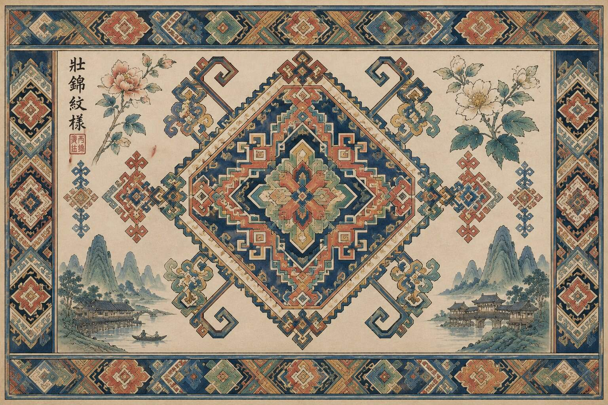
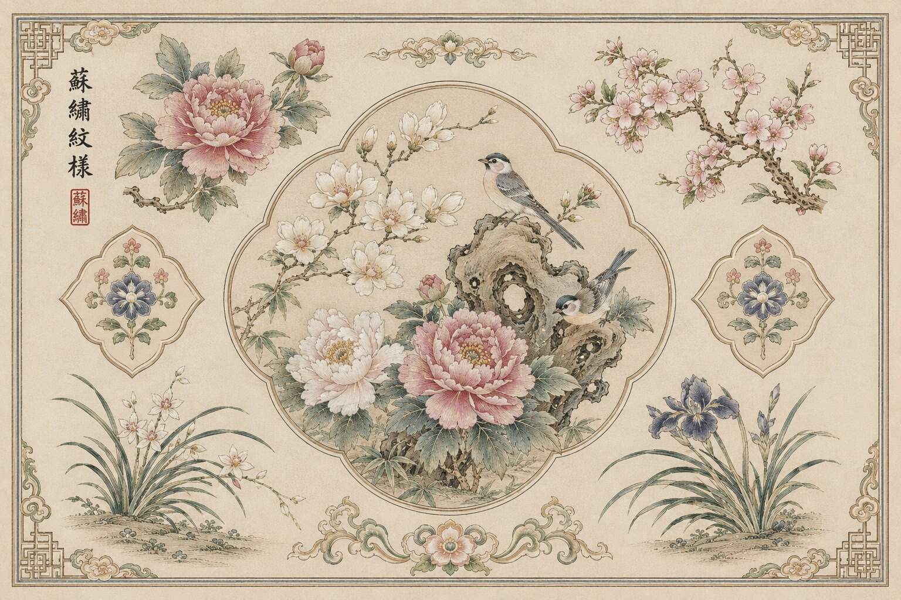
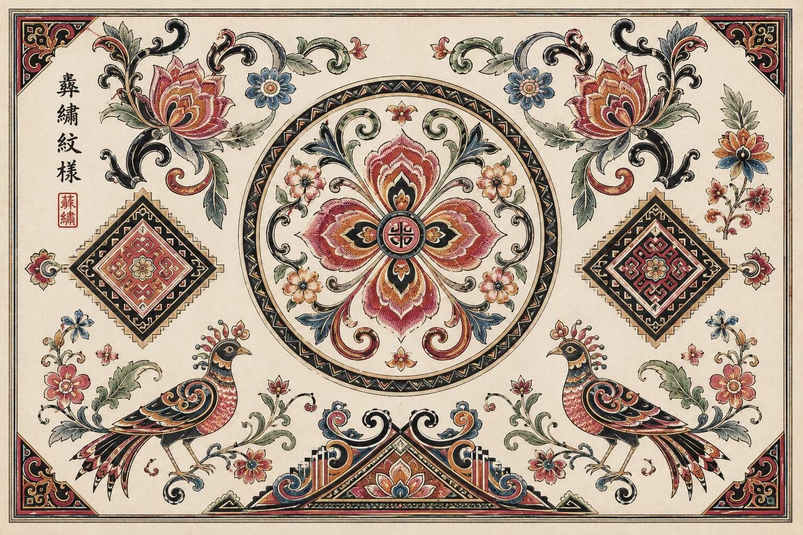

苗绣
贵州 · 黔东南
五色彩线、土布、天然染色与“不打底稿”的经纬挑绣，让衣裳成为迁徙、创世与族群记忆的载体。
展开绣卷 ↗民族刺绣文明，一针一线绣出中华民族共同体的精神图谱。从西南深山到雪域高原，从江南水乡到八桂大地，纹样既保存各自的文化密码，也不断在交流中彼此照见。
苗绣的蝴蝶妈妈、藏绣的吉祥八宝、壮锦的几何秩序、苏绣的工笔花鸟、彝绣的火纹图腾。点击任一绣卷，宣纸将展开完整的历史源流、技艺特征与文化寓意。
五色彩线、土布、天然染色与“不打底稿”的经纬挑绣，让衣裳成为迁徙、创世与族群记忆的载体。
展开绣卷 ↗原色、强对比、明快线条与独特针法，将高原生态、宗教艺术和跨地域文化吸收织入同一幅绣面。
展开绣卷 ↗“通经断纬”织造出几何连续纹与动植物复合纹，红黄蓝绿的强烈组合保存着乐观而严谨的生活秩序。
展开绣卷 ↗“精、细、雅、洁”，以针作画，以丝为色；双面绣与花鸟纹将江南审美转化为极致细密的针线语言。
展开绣卷 ↗红、黄、黑三原色与太阳纹、火镰纹、羊角纹共同回应“天地人”和谐共生的宇宙观。
展开绣卷 ↗从“穿在身上的无字史书”进入苗绣最核心的创世纹样。这里不只展示图案，而让纹样成为叙事入口。
据苗族古歌叙事，枫香树孕育蝴蝶妈妈；蝴蝶妈妈生下十二个蛋，万物与人类祖先由此诞生。蝴蝶纹因此不仅是装饰，更是“万物同源、众生平等”宇宙观的针线表达。
迁徙记忆也被绣入衣装：过江、翻山、远行，沿途山河化为江河纹、山川纹与龙纹。苗绣中的龙可以拥有牛头、鱼身、蛇身等多种变体——这不是“偏离”，而是开放吸收与自由想象留下的文化对话。
十个代表性纹样围绕“同源 · 共生”展开。悬停节点，可观察不同地域与民族如何以各自的图像语言回应生命、天地、吉祥与共同记忆。
30秒 AI 主题短片，以“蝴蝶妈妈”为叙事原点，串联苗族创世神话、迁徙记忆与当代数字传承。针线、神话、山河与数字技术在同一幅长卷中渐次展开。
苍老双手在靛蓝土布上绣出蝴蝶纹；老绣娘与小女孩共同进入画面。
蝴蝶纹泛光，叠化枫树、十二个蛋与万物诞生的古歌意象。
江河、山川、龙纹渐次展开；古老迁徙与现代文创并置。
年轻传承人借助平板与 AI 辅助设计，不同民族纹样在同一画面相遇。
巨幅苗绣长卷展开，蝴蝶妈妈居中，四周环绕多民族代表性纹样。
微观进入：以真实手工劳动建立情感与时间感。
纹样转为叙事场，古歌中的生命谱系从针脚中苏醒。
衣摆成为地图，江河与山川作为共同记忆被“穿”在身上。
科技克制介入，最终回到工笔人物与宣纸长卷。
同源，是不同纹样背后对生命、自然与祖先的共同追问；共生，是千百年交流互鉴留下的针脚。让数字技术做新的“线”，不是覆盖传统，而是把分散的文化记忆重新连接。

核心特征：苗绣被誉为苗族的“无字史书”。传统工序从织布、引纬、打紧、染布到绣花完整展开；五色彩线常以天然草木与矿物染色。许多绣娘不打底稿，而是数着底布经纬挑绣，色彩大胆、对比强烈。
故事与寓意：迁徙叙事中，彩线成为记路的方法；过河、翻山、远行都可以被绣成符号。蝴蝶妈妈是最核心纹样之一，连接创世、生命繁衍与“万物同源”的宇宙观。苗绣龙纹又常出现牛头、鱼身等自由变体，体现开放的文化想象。

核心特征：藏绣源于高原文化语境，色彩艳丽、线条明快、针法活泼，常使用原色而少用复杂过渡，因此形成纯厚、鲜明的视觉关系。
故事与寓意：早期题材与寺院用品、唐卡及花卉纹样关系紧密，吉祥八宝、八瓣格桑花、雪莲等题材不断进入绣面。漫长发展中，藏绣吸收中原、中西亚与藏传佛教艺术手法，逐渐形成兼具信仰、生态与生活气息的高原文化现象。

核心特征：壮锦以棉纱为经、彩色丝绒为纬，采用“通经断纬”工艺。红、黄、蓝、绿形成高对比组合，几何连续纹、动植物复合纹与多色块组合构成严谨而明快的秩序。
故事与寓意：壮锦从生活用品、被面与床单一路走向壁挂、手包等现代文创。它既保存壮族生活经验和吉祥意象，也体现一种乐观、热烈而富有结构感的民族审美。

核心特征：苏绣以“精、细、雅、洁”著称，强调“平、顺、和、柔、匀、光”。双面绣在同一底料正反两面形成轮廓一致、同样精美的图像，是技艺精度的集中体现。
故事与寓意：江南水乡与丝绸传统为苏绣提供了文化土壤。明代以来，吴门画派推动书画与刺绣融合，“以针作画”逐渐成为苏绣的重要审美表达。花鸟、江南意象与细密针法共同塑造温婉、清雅的文化气质。

核心特征：彝绣常以红、黄、黑为三大原色，技法包括挑花、贴花、盘花、锁花、补花等；太阳纹、火镰纹、羊角纹和兽牙纹等图腾题材具有鲜明识别度。
故事与寓意：“火”象征净化、光明与生命延续；太阳纹回应对光明的向往，火焰纹承载节庆热情。红、黄、黑的关系常被解释为“天地人”和谐共生的视觉表达。千百年来，火塘边的针线把创世史诗、迁徙记忆与自然敬畏绣进日常服饰与生活用品。